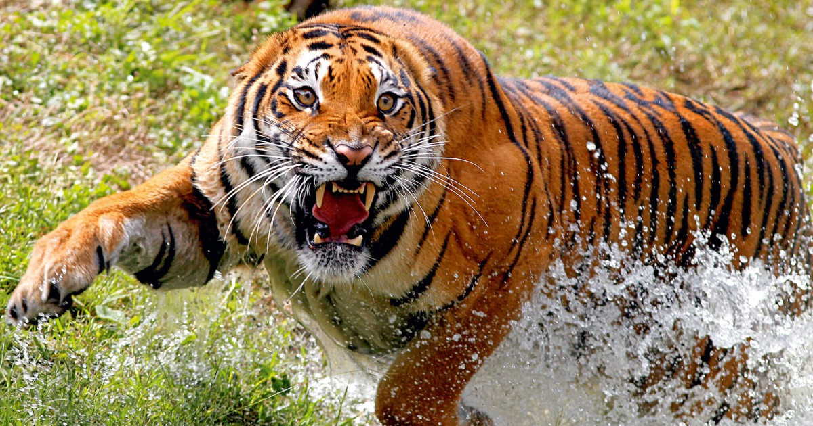

БЕНГАЛЬСЬКИЙ ТИГР

Фізичні характеристики
Його забарвлення варіюється від жовтого до світло-жовтогарячого хутра, а смуги від темно-коричневого до чорного, живіт білий, а хвіст переважно білий з чорними кільцями. Альбіносна мутація – білий тигр – має темно-коричневі або червонувато-коричневі смуги на білому хутрі, рідше зустрічаються абсолютно білі тигри, без смуг.
Загальна довжина тіла, у тому числі хвіст, серед самців зазвичай коливається від 270 до 310 см, але може досягати 330 см, повідомлялося про звірів, що досягали і 370 см, тоді як самки від 240 до 265 см, але може досягати 310 см. Довжина хвоста зазвичай від 85 до 110 см, а висота в загривку становить від 90 до 110 см і відповідно може досягати 115 см. У бенгальського тигра найбільші ікла з сімейства котячих, які можуть перевищувати 8 см.
Середня маса самців складає 221,2 кг, у північній Індії , Непалі - в середньому 235 кг, і максимально може досягати 250 кг, а в окремих випадках 300 кг. Середня маса самок складає 139,7 кг та максимально може досягати 257 кг. Рекордна маса самця, вбитого в північній Індії в 1967 році , становила 327,7 кг. Це офіційно найвищий показник у природі серед бенгальських тигрів.
Рев бенгальського тигра можна почути на відстані до 3 км.
Біла варіація
Невелика населення була виведена зарубіжними вченими в середині 70-х для прикраси зоопарків. У природних умовах біла шкіра тільки заважала б звірові полювати влітку. Фахівці пояснюють рідкісне забарвлення недостатнім вмістом пігменту. Проте чорні смужки у своїй не постраждали. Білі тигри відрізняються від своїх побратимів із рудою шкірою ще й блакитним кольором очей (це доводить, що ця мутація не є альбінізмом ).
Напади на людей
Тигр-людожер
Раніше тигри нападали на людей у багатьох місцях свого індійського ареалу . Швидше за все ця поведінка викликана тим, що тигри іноді нападають на індійського дикобраза . Голки глибоко встромляються в шкіру невдалих хижаків і не виходять звідти, викликаючи гострий біль. Такий мисливець вже не в змозі зловити велику швидку видобуток і вибирає дрібну дичину, іноді людей. В даний час на великому заболоченому просторі, утвореному загальною дельтою річок Ганг і Брахмапутра , мешкають близько 500 бенгальських тигрів. Так як в Індії проводяться заходи щодо захисту цих тварин, то в деяких місцях окремі тигри вважають людину доступним видобутком через густонаселеність граничних із заповідниками територій (при доступності інших жертв так частіше надходять старі або ослаблені тварини). Для мешканців островів дельти тигри-людожери не є єдиною небезпекою, але все ж таки викликають у них найбільший страх. Декілька випадків нападів зафіксовано і в національному парку Бандхавгарх (у центральній частині країни).
НАЗАД ДО МЕНЮ
НАЗАД ДО КОТА МАНУЛА
ПЕРЕЙТИ ДО ВЕДМЕДЯ